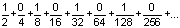
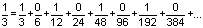
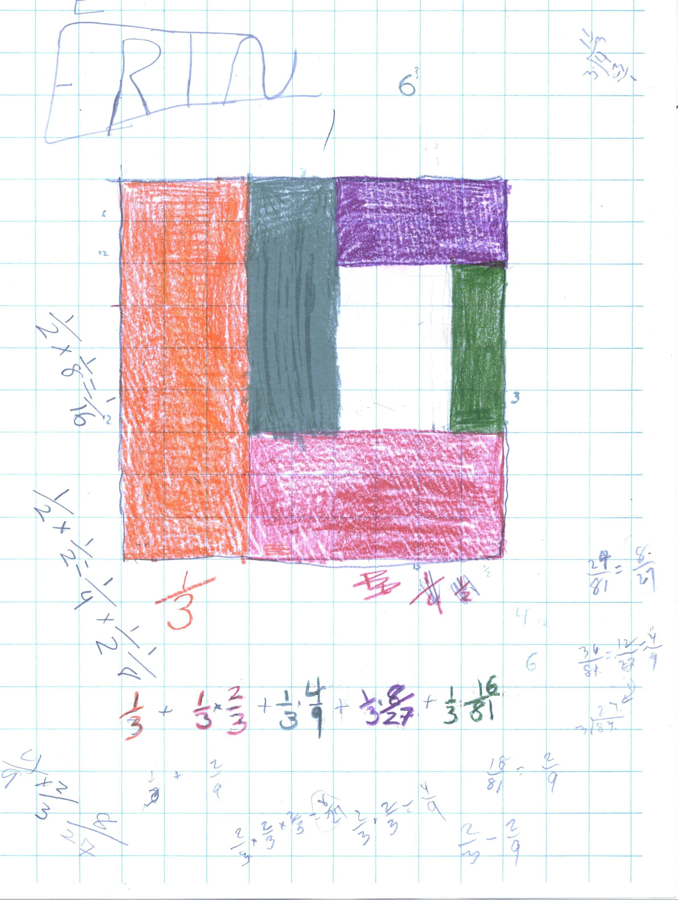
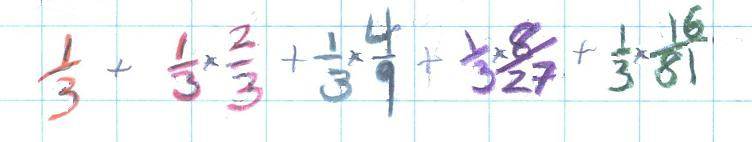

Erin's math, Summer after finishing 3rd grade and Fall in 4th grade
1. Solving the equation 2x + 3 = 18, trying to find the number for x that will make this sentence true, in Erin's words:
"One day I tried to figure out an algebra problem that said 2x + 3 = 18. I tried 8 but that was too big and 7 was too small. I drew a number line --7---------8-- . But I did not know that there was a number between 7 & 8, but then I thought of 7 1/2. So I tried it and it worked! That gave me an idea: I wanted to see how many numbers I could find between 7 & 8. I found 29 of them and they are: 7 1/2, 7 3/7, 7 9/10, 7 4/10, 7 3/9, 7 8/9, 7 5/6, 7 2/9, 7 3/4, 7 3/6, 7 2/9, 7 6/9, 74/9, 7 5/9, 7 1/3, 7 1/4, 7 1/5, 7 1/6, 7 1/7, 7 1/8, 7 1/9, 7 2/32, 7 6/8, 7 4/6, 7 6/10, 7 4/5, 7 2/11, 7 3/5, 7 5/8".
2. Sharing 2 cookies between 3 people (the cookies were 3x5" cards).
Erin decided right away that if she couldn't share, she would cut the remaining pieces into 2 equal pieces [a common and simple way of solving a problem like this]. Erin & Don discussed how many of each piece would make a whole cookie, then she could name that piece. [See the sample problems for chapter 2].
Each person got  of a cookie!
Don then asked Erin to do the same problem, but cut the cookies in a
different way, like cut into 3 pieces. When she did this, each person got of a cookie. So the infinite series above goes to (=) , or =
Then Don asked Erin "if 2/3 equals this infinite series, 1/3 would equal what infinite series ?" Don left Erin to work this out and when he came back she had this:
 which couldn't work!
Later Don asked Erin to do 1/3 and 1/3 of 1/3, and so forth

Don looked at what Erin did and was really confused. What Erin did was to take 1/3 of the 9x9 square (orange piece); that was fine. Then instead of adding 1/3 of 1/3, she added 1/3 of what was left!!! The red part was 1/3 of 2/3 = 18/81 = 2/9 of the big square. Don asked Erin to keep going using her method and see what was going to happen. Meanwhile Don proceeded to continue her method by himself, to obtain the interesting result.
Later in December Don sat down with Erin during class, to help her get the following series

Do you see a pattern? See if you can continue this pattern and get the sum of this series. Note: this is a classic case of not writing the answer as one number, but writing it to let one see a pattern!
Don will continue this with Erin next time, perhaps; she needs to get
2/3 + 4/9 + 8/27 + ... before we can do the one above.